의공산업기사 (2019-09-21 기출문제)
1과목: 기초의학 및 의공학
1. 다음은 혈액순환에 대한 것으로 무엇을 설명한 것인가?
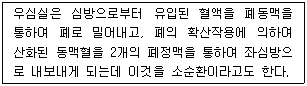
- 체순환
- 폐순환
- 정맥순환
- 동맥순환
(정답률: 88%)

2. 산소-헤모글로빈 해리곡선의 S자형에 영향을 미치는 요소가 아닌 것은?
- pH
- 혈당
- 온도
- 이산화탄소
(정답률: 67%)
3. 광센서를 응용하여 측정하는 양으로만 이루어진 것은?
- 산소포화도, 전압, pH
- 유전율, 산소포화도, 광량
- 이산화탄소, 분압, 광량, 유전율
- 산소포화도, pH, 이산화탄소, 분압
(정답률: 74%)
4. 열전쌍의 장점이 아닌 것은?
- 크기가 작다.
- 열용량이 작다.
- 응답시간이 빠르다.
- 고감도 증폭기가 필요하다.
(정답률: 76%)
5. 막을 경계로 한 두 이온 용액의 평형상태에서의 전위를 예측할 수 있는 방법은?
- 퓨리에 변환
- Nernst 방정식
- Beer의 법칙
- 맥스웰의 방정식
(정답률: 78%)
6. 센서에서 입력과 출력신호를 쉽게 비교하기 위해서는 입력과 출력신호 사이에 어떤 특성이 있어야 하는가?
- 직선성
- 비선형성
- 간헐적
- 상관없다.
(정답률: 77%)
7. 다음 ( )안에 알맞은 말은?
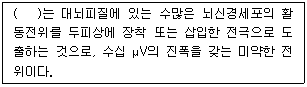
- 근전도(electromyogram, EMG)
- 심전도(electrocardiogram, ECG)
- 유발전위(Eevoked Potential, EP)
- 뇌전도(electroencephalogram, EEG)
(정답률: 90%)
8. 측정용 전극과 전기 자극용 전극에 대한 설명으로 옳은 것은?
- 원리상 서로 다른 전극이다.
- 전기 자극용 전극을 측정용으로 사용할 수 없다.
- Ag-AgCl 전극은 전기 자극용 전극으로 적합하지 않다.
- 전기 자극용 전극에서는 분극 현상이 발생하지 않는다.
(정답률: 67%)
9. 신체의 혈관 중 총 단면적이 가장 큰(넓은) 것은?
- 동맥(artery)
- 혈장(plasma)
- 모세혈관(capillary)
- 세정맥(venule)
(정답률: 77%)
10. 신경세포에 대한 설명으로 틀린 것은?
- 신경세포의 중심부분은 세포체이다.
- 축삭을 싸고 있는 절연체 물질은 미엘린(myelin)이다.
- 하나의 신경세포는 3개 이상의 축삭을 가지고 있다.
- 축삭의 길이는 경우에 따라서 1m 이상 되는 것도 있다.
(정답률: 79%)
11. 심장 전도계에서 전기 자극의 전달 순서로 옳은 것은?
- 방실결절 → His 번들 → 퍼킨제 섬유 → 동방결절
- His 번들 → 퍼킨제 섬유 → 동방결절 → 방실결절
- 퍼킨제 섬유 → 동방결절 → 방실결절 → His 번들
- 동방결절 → 방실결절 → His 번들 → 퍼킨제 섬유
(정답률: 86%)
12. 전자식 직접 혈압측정에 사용되는 방법으로 부적절한 것은?
- 탄성게이지 이용법
- 임피던스 이용법
- 유도용량 이용법
- 정전용량 이용법
(정답률: 62%)
13. 금속이 전해질 속의 이온과 평형상태를 이루게 되어 그 금속 특유의 전극전위를 갖게 되는데, 이를 무엇이라 하는가?
- 분극전압
- 반전지 전위
- Offset 전위
- 안정막 전위
(정답률: 69%)
14. 일차뼈 되기 중심과 이차뼈 되기 중심에 있는 연골로서 뼈의 길이 성장이 일어나는 것은?
- 해면뼈(sponge bone)
- 치밀뼈(compact bone)
- 뼈끝판(epiphyseal plate)
- 관절연골(articular cartilage)
(정답률: 81%)
15. 다음 전극 중 근육의 근섬유 전위를 측정하는 용도로 사용되는 것은?
- 미세 전극(micro electrode)
- 흡착 전극(suction electrode)
- 바늘형 전극(needle electrode)
- 금속판 전극(metal plate electrode)
(정답률: 70%)
16. 흡착전극의 부착위치로 가장 적당한 부위는?
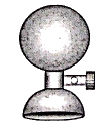
- 가슴
- 손가락
- 머리(두피)
- 피하의 근육층
(정답률: 83%)
17. 다음 그림은 일회용 금속판 전극(disposable electrode)의 단면을 나타낸 것이다. 일반적으로 전해질 겔(electrolyte gel) 부분에 반드시 있어야 할 이온은?
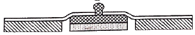
- Cl-
- Fe2+
- Hg2+
- Ti+
(정답률: 81%)
18. 압전센서의 활용 용도로 틀린 것은?
- 심음측정
- 혈압측정
- 혈류측정
- 체온측정
(정답률: 76%)
19. 선형가변차동변환기의 설명으로 틀린 것은?
- 민감도가 높다.
- 유도전압을 측정한다.
- 위상변화가 있어서 방향 인식이 가능하다.
- 좁은 주파수 대역에서 선형성을 나타낸다.
(정답률: 77%)
20. 호흡과 관련된 다음 용어들에 대한 설명으로 틀린 것은?
- 폐포 – 작은 공기주머니로 가스교환이 쉽게 이루어지며 표면장력을 강화시키기 위해 계면활성제 분비를 억제 시킴
- 잔기량 – 최대 호기량을 다 배출한 후 폐 내부에 남아 있는 공기의 양
- 부비동(Paranasal sinus) - 비강을 둘러싼 뼈 속의 빈 공간으로 코에 감염이 있으면 부비동으로 퍼지게 됨
- 폐활량 – 사람이 최대흡기 후 호흡기에서 배출할 수 있는 최대 호기의 양
(정답률: 72%)
2과목: 의용전자공학
21. 다음 중 생체신호를 계측하는 방법이 아닌 것은?
- 패턴 측정
- 표면 측정
- 외부 측정
- 침습적 측정
(정답률: 70%)
22. 커패시터를 사용한 평활회로에서 충전과 방전에 의한 출력전압의 변동을 나타내는 전압은?
- 가변전압
- 리플전압
- 바이어스전압
- 임피던스전압
(정답률: 62%)
23. 생체 계측시 유도잡음 대책이 아닌 것은?
- 대역필터 사용
- 차동증폭기 사용
- 저잡음 증폭기 사용
- 입력 임피던스가 낮은 증폭기 사용
(정답률: 74%)
24. 다음의 연산증폭기 회로에서 R1=R2=R3=330Ω 이고, Rf=3.3kΩ 일 때 이득은 얼마인가?
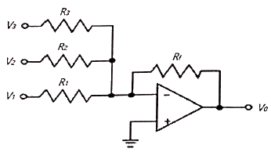
- 0.1
- 3.3
- 10
- 33
(정답률: 64%)
25. 옴의 법칙을 설명한 것으로 옳은 것은?
- 저항이 일정하면 전류의 크기는 전압에 반비례한다.
- 전압이 일정하면 전류의 크기는 저항에 반비례한다.
- 전류가 일정하면 전압의 크기는 저항에 반비례한다.
- 저항이 일정하면 전압의 크기는 전류에 반비례한다.
(정답률: 74%)
26. 마이크로프로세서의 성능은 크게 데이터를 처리하는 3가지 척도를 사용하여 평가한다. 다음 중 3가지 척도에 해당하지 않는 것은?
- 워드 형태
- 명령어 처리 속도
- 데이터를 처리하는 워드 길이
- 접근 할 수 있는 메모리 크기
(정답률: 78%)
27. 다음 카르노 맵(Karnaugh map)을 이용한 가장 간단한 논리식은?
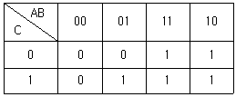
- A + BC
- ABC
- AB + BC + AC
- (A + B)(B + C)(A + C)
(정답률: 74%)
28. 광학적 계측시스템에서 쓰이는 광원이 아닌 것은?
- 레이저
- 아크방전
- 텅스텐램프
- 피에조크리스탈
(정답률: 74%)
29. 다음 반파 정류된 전압의 평균값(V)은?
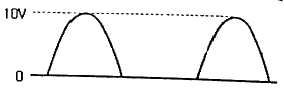
- 약 3.2
- 약 5.2
- 약 6.4
- 약 10
(정답률: 73%)
30. 공기 콘덴서의 극판 사이에 비유전율 εs의 유전체를 채웠을 때 정전용량은 얼마나 증가하는가?
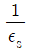
배 증가 한다.- εs 배 증가 한다.
- ε0εs 배 증가 한다.
- 변하지 않는다.
(정답률: 68%)
31. 기체농도의 측정에서 “적외선이 기체에 의해 흡수되는 정도를 측정하여 농도를 계산”하는 것은?
- Mass Spectroscopy
- Thermal Conductivity Detector
- Infrared Spectroscopy
- Emission Spectroscopy
(정답률: 69%)
32. 교류 전력의 정의에 관한 설명으로 틀린 것은?
- 피상전력은 평균전력이라 부른다.
- 무효전력은 Pr = VI sinθ로 구한다.
- 평균전력은 순시전력의 한 주기에 대한 평균값이다.
- 유효전력(P), 무효전력(Pr), 피상전력(Pa) 사이에는
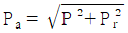
이 성립한다.
(정답률: 55%)
33. 다음 중 정전압용으로 주로 사용되는 다이오드는?
- 쇼트키 다이오드
- 제너 다이오드
- 발광 다이오드
- 포토 다이오드
(정답률: 74%)
34. 2진수 (110101)2의 10진수 값은?
- 50
- 53
- 60
- 63
(정답률: 83%)
35. 심전도를 측정할 경우 그 신호에 크게 영향을 주는 인자가 아닌 것은?
- 근육 움직임에 의한 잡음유입
- 호흡에 의한 기저선의 변동
- 검사실의 온도와 습도 변화
- 전원선 주파수(60 Hz)에 의한 간섭
(정답률: 80%)
36. FM 방식에서 변조지수가 1보다 매우 클 때, 최대주파수 편이가 △fs 라 하면 주파수 대역폭 BWFM은 얼마만큼 필요한가?
- BWFM = △fs
- BWFM = 2△fs
- BWFM = 3△fs
- BWFM = 4△fs
(정답률: 69%)
37. 다음 중 생체신호 측정 시 고려사항이 아닌 것은?
- 인체에 주는 피해를 최소화 하도록 한다.
- 정확한 센서 부착위치와 계측 조작방법을 습득해야 한다.
- 정확한 측정을 위하여 온도, 습도, 소음, 멸균 등 계측에 적절한 환경을 유지한다.
- 일회용 계측장비가 아닌 경우 소독이나 멸균에 주의 하지 않아도 상관없다.
(정답률: 86%)
38. 그림과 같은 회로의 명칭으로옳 은 것은?
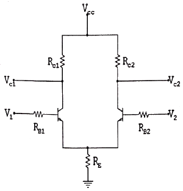
- 대수 증폭회로
- 차동 증폭회로
- 반가산 증폭회로
- 슈미트 트리거회로
(정답률: 75%)
39. 생체신호용 전극 중 주로 신생아의 심전도 측정에 사용 되는 것은?
- 흡착 전극(suction electrode)
- 부유 전극(floating electrode)
- 가요성 전극(flexible electrode)
- 금속 전극(metal-plate electrode)
(정답률: 75%)
40. 입출력 장치와 주기억장치 사이의 데이터 전송을 담당하는 입출력 전담 장치는?
- 콘솔 장치
- 채널 장치
- 터미널 장치
- 상태 레지스터 장치
(정답률: 70%)
3과목: 의료안전ㆍ법규 및 정보
41. 다음 중 의료정보관련 국제 표준이 아닌 것은?
- HL7
- DICOM
- SNOMED
- PACS
(정답률: 68%)
42. 의료가스 중 구급용, 인공호흡용, 고압산소치료용 등 주로 흡입용으로 사용되는 가스는?
- 질소
- 탄산
- 산소
- 아산화질소(N2O)
(정답률: 78%)
43. 다음 중 누설전류의 종류가 아닌 것은?
- 환자누설전류
- 외장누설전류
- 접지누설전류
- 내장누설전류
(정답률: 72%)
44. SNOMED 에 대한 설명 중 틀린 것은?
- SNOP를 기초로 만들었다.
- SNOMED Ⅱ는 5개의 축을 가진 코드체계이다.
- 조합코드 등을 이용하여 더욱 복잡한 개념 형성이 가능하다.
- ICD-9-CM 진단용어들의 대부분이 SNOMED International의 질병/진단 모듈이 나타나 있다.
(정답률: 61%)
45. 의료폐기물의 수집·운반의 경우 잘못 설명한 것은?
- 의료폐기물은 전용용기에 넣어 밀폐 포장된 상태로 의료폐기물 전용의 운반차량으로 수집·운반해야 한다.
- 의료폐기물은 흩날림·유출 및 악취의 새어나옴을 방지할 수 있는 밀폐된 적재함이 설치된 차량으로 운반해야 한다.
- 의료폐기물의 수집·운반차량은 차체는 빨간색으로 색칠하여야 한다.
- 의료폐기물의 운반차량은 운반 중에는 항상 냉장설비가 가동되어야 한다.
(정답률: 81%)
46. 다음 중 여러 치료서비스 조건에 적합하도록 의료가스를 설계해야하는 장소에 속하지 않는 것은?
- 수술실
- 분만실
- 집무실
- 집중치료실
(정답률: 80%)
47. 의료기기의 등급분류를 위한 잠재적 위해성의 판단기준으로 틀린 것은?
- 침습의 정도
- 인체와 접촉하고 있는 기간
- 구강내의 화학적 변화 유무
- 약품이나 에너지를 환자에게 전달하지는 여부
(정답률: 80%)
48. 전자파가 인체 조직세포의 온도를 순식간에 비정상적으로 상승시켜 기능이상을 일으키거나 파괴하는 것은 전자파의 어떤 작용 때문인가?
- 열작용
- 비열작용
- 광학작용
- 자극작용
(정답률: 65%)
49. 보건산업진흥원이 식품·약품·화장품·의료기기 등의 품질과 기능을 엄격히 평가해 기준을 통과한 제품에 부여하는 마크는?
- Q 마크
- GH 마크
- EMI 마크
- NSF 마크
(정답률: 70%)
50. 의료기기의 기계적 강도시험의 종류가 아닌 것은?
- 밀기시험
- 낙하시험
- 거친충격시험
- 누설접지시험
(정답률: 78%)
51. 의료기기법령상 과징금을 부과하려는 때에 반드시 명시하지 않아도 되는 것은?
- 이의기간
- 위반행위 횟수
- 그 위반행위의 종별
- 해당 과징금의 금액
(정답률: 77%)
52. 원격의료의 응용분야에 거리가 먼 것은?
- 진료의 전문화
- 예방 의학 및 환자 교육
- 이송단계에서의 자료전송
- 환자 히스토리에 대한 일상적인 건강상담 및 검사
(정답률: 70%)
53. 미생물에 물리적·화학적 자극을 가하여 완전히 사멸 제거하는 방법은?
- 멸균
- 소독
- 살충
- 방부처리
(정답률: 80%)
54. 인체에 흐르는 전류 중 인체반응에서 최대 감지전류 값은 얼마인가?
- 1 mA
- 5 mA
- 10~20 mA
- 50 mA 이상
(정답률: 66%)
55. 의료기기법상 의료기기의 수입을 업으로 하려는 자의 절차로 옳은 것은?
- 보건복지부장관의 수입업허가를 받아야 한다.
- 보건복지부장관의 수입업신고를 하여야 한다.
- 식품의약품안전처장의 수입업허가를 받아야 한다.
- 식품의약품안전처장의 수입업신고를 하여야 한다.
(정답률: 72%)
56. 손가락 끝 등으로 만졌을 때 처름 찌릿하게 느끼는 전류를 무엇이라 하는가?
- 문턱전류
- 항복전류
- 최소감지전류
- 자발탈출전류
(정답률: 77%)
57. 현재 국내 의료보험 청구 방법 중 가장 일반적으로 사용되고 있는 것은?
- HL7
- EDI
- FAX
(정답률: 65%)
58. 의료기기 제조 및 품질관리 중 품질경영시스템의 문서화 항목이 아닌 것은?
- 측정장비의 관리
- 부적합품의 관리
- 품질방침
- 전시관리
(정답률: 75%)
59. 주요 멸균 공정과 멸균 의료기기 표시에 대한 요구사항과 관련된 규격은?
- 조사 멸균 확인 일상 관리 : EN 552
- 산화에틸렌 멸균 확인 및 일상 관리 : EN 411
- 습열에 의한 멸균 확인 및 일상 관리 : EN 653
- 멸균 의료기기 표시에 대한 요구 사항 : EN 657
(정답률: 64%)
60. 눈이나 피부가 레이저에 노출되었을 때 위험한 영향이나 생물학적 부작용이 발생하지 않을 정도의 레이저광 방사 수준을 의미하는 것은?
- 피폭방출한계
- 최대허용노광량
- 레이저파장
- 펄스지속시간
(정답률: 73%)
4과목: 의료기기
61. 재택진단기기의 특징으로 틀린 것은?
- 재택진단기기의 기본 진단 항목은 뇌전도(EEG)이다.
- 양방향 화상 통신을 기본으로 하므로 초고속 정보통신 수단을 할용해야 한다.
- 생화학분석기에 의해 요단백검사, 혈당검사, RBC와 WBC 수치 검사 등을 할 수 있다.
- 재택진단기기의 필수 항목은 진단용 확대 카메라, 전자 청진기, 생화학 검사기 등이 있다.
(정답률: 74%)
62. 다음 중 사이클로트론이 필요한 단층 촬영장치는?
- MRI
- PET
- SPECT
- X-선 CT
(정답률: 67%)
63. 심박출량 측정법에 해당하지 않는 것은?
- 임피턴스 희석법
- 지시약 희석법
- 온도 희석법
- 단극 희석법
(정답률: 58%)
64. 방사선 치료장치 중 고에너지 치료장치에 해당되는 것은?
- 표재치료장치
- 선형가속장치(Linac)
- 감마나이프(Gamma Knife)
- 코발트 60 원격치료장치
(정답률: 58%)
65. 적혈구, 백혈구, 혈소판 등 혈액속의 혈구수를 측정하기 위한 임상검사기기는?
- 혈액가스분석기
- 자동혈구계수기
- 생화학분석기
- 원심분리기
(정답률: 79%)
66. 다음 중 위치감지회로를 사용하는 영상장치는?
- 감마카메라
- 초음파 스캐너
- 적외선 촬영장치
- 엑스선 촬영장치
(정답률: 55%)
67. 다음 중 간접 혈압측정법에 대한 설명으로 틀린 것은?
- 압력계가 부착된 압박대(cuff)와 공기주입펌프가 있다.
- 대표적인 간접 혈압측정법으로는 촉진법과 청진법이 있다.
- 간접 혈압측정법 중 촉진법은 최고혈압과 최저혈압 모두 측정이 가능하다.
- 청진법에서 동맥압박에 의해 발생되는 혈관음을 코로트코프(korotkoff)음이라 한다.
(정답률: 63%)
68. 인공관절면이 마모되어 미립자가 떨어져 나와 생체반응을 일으킴으로써 점차 뼈가 녹아내리고 고정면이 느슨해지는 현상은?
- 해리
- 피로
- 흡착
- 시멘트병
(정답률: 72%)
69. 다음 중 물의 CT-번호(Hounsfield Unit)는?
- -50
- 0
- 50
- 100
(정답률: 73%)
70. 초음파 영상 촬영 방식 중 단면 영상을 보여주는 것은?
- A-mode
- M-mode
- B-mode
- TM-mode
(정답률: 66%)
71. 임시형 페이스메이커를 이용한 응급처리 방법 중 안전하며 심방의 활동 정보를 정확히 알 수 있는 심박조율 방법은?
- 경정맥 심박조율
- 경흉부 삼벅조율
- 경식도 심박조율
- 경피적 심박조율
(정답률: 56%)
72. 인공 페이스메이커 이식 후의 주의사항으로 틀린 것은?
- 핸드폰과는 일정 거리 이상 유지하는 것이 좋다.
- MRI 촬영과 같은 의료행위에 제한을 받는다.
- 자석 요, 고주파 온열치료기 등을 사용하면 안 된다.
- 전지는 반영구적이기 때문에 교체할 필요가 없다.
(정답률: 80%)
73. 일반인의 가청주파수 대역은?
- 1 Hz ~ 10 Hz
- 20 Hz ~ 30 kHz
- 30 kHz ~ 40 kHz
- 60 kHz ~ 80 kHz
(정답률: 69%)
74. 초음파의 전파속도에 대한 설명으로 옳지 않은 것은?
- 전파속도는 고체에서 가장 빠르다.
- 밀도가 증가 시 전파속도가 증가한다.
- 전파속도는 주파수와 파장의 곱과 같다.
- 전파속도는 매체의 밀도와 경도에 따라 결정된다.
(정답률: 53%)
75. 인공심폐기의 구성 중 동맥펌프와 더불어 가장 중요한 장치로 정맥혈액에 산소 공급을 해줄 뿐만 아니라 이산화탄소 제거 기능을 해주는 장치는?
- 산화기
- 여과기
- 열교환기
- 정맥 캐뉼러
(정답률: 70%)
76. 극초단파 치료기에 사용되는 극초단파의 특징으로 틀린 것은?
- 초점을 집속한다.
- 주파수가 낮을수록 침투깊이가 낮다.
- 심부조직을 선택적으로 가열할 수 있다.
- 수분을 함유한 조직에서 많이 흡수된다.
(정답률: 63%)
77. 분당 심박출량이 5.0 L/min, 심박수가 100 beat/min 일 때 1회 박출량은 얼마인가?
- 20 mL
- 20 L
- 50 mL
- 50 L
(정답률: 64%)
78. 뇌파 중 주파수 대역이 8 ~ 13 Hz 인 성분의 명칭은?
- 알파파
- 델타파
- 세타파
- 감마파
(정답률: 66%)
79. 인공신장기의 구성요소가 아닌 것은?
- 투석기
- 저혈조
- 혈액펌프
- 전해질 농도 측정기
(정답률: 54%)
80. 체외충격파쇄석기의 구성요소가 아닌 것은?
- 위치측정장치
- 온도조절장치
- 충격파전달매체
- 충격파발생장치
(정답률: 75%)
5과목: 의용기계공학
81. 초음파에 대해 올바르게 설명한 것은?
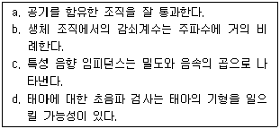
- a, b
- b, c
- c, d
- a, d
(정답률: 71%)
82. 생체의 열적 특성에 대한 설명으로 틀린 것은?
- 근육은 지방보다 열을 전달하기 쉽다.
- 열의 방산은 주로 호흡에 의해 일어난다.
- 유아의 체중 당 방열량은 성인에 비해 높다.
- 인체 조직 내의 열운반은 대부분 혈액의 순환에 의해 이루어진다.
(정답률: 68%)
83. 손실된 사지 일부의 기능이나 외관을 대행하는 기구를 무엇이라 하는가?
- 의지
- 전극
- 보조기
- 스텀프
(정답률: 71%)
84. 세포괴사(Necrosis)는 세포조직이 붕괴되거나 기능이 정지되어 죽게 되는 과정이다. 다음 중 세포괴사의 물리적 원인이 아닌 것은?
- 방사선
- 고압전류
- 세균의 독소
- 45℃ 이상의 고온
(정답률: 67%)
85. 수산화인회석의 의학적 응용이 아닌 것은?
- 인공치근
- 윤활제
- 인공관절
- 골형성 촉진제
(정답률: 71%)
86. 보행과 관련된 힘의 성분으로 틀린 것은?
- 지면반발력
- 척추지지력
- 족관절 모멘트
- 슬관절 모멘트
(정답률: 60%)
87. 자외선(파장영역 200~400nm)에 생체가 과도하게 노출되었을 때, 생체에 미치는 영향이 아닌 것은?
- 안염
- 각막 열상
- 피부의 흑화
- 광화학 반응에 의한 백내장
(정답률: 64%)
88. 스프링 와셔에 대한 설명으로 옳은 것은?
- 연속적이며 직선 모양이다.
- 동력을 전달할 경우 사용한다.
- 코일 형상으로 전기와 연결한다.
- 나사풀림을 방지하기 위해 사용한다.
(정답률: 71%)
89. 고주파의 전자장이 생체에 미치는 영향 중 열적작용 효과에 대한 설명으로 틀린 것은?
- 열의 흡수는 비 흡수율(SAR)로 표시한다.
- 150 mW/cm2의 강도에서 눈에 영향을 미쳐 백내장을 일으킨다.
- 5 mW/cm2의 강도에서 고환에 영향을 미쳐 불임증을 일으킨다.
- 세포에 대한 자극 작용은 많이 발생하고, 열적작용에 따르는 온도하강이 발생한다.
(정답률: 65%)
90. 뼈와 뼈를 역학적으로 연결하는 수동적인 생체조직은?
- 건(tendon)
- 인대(ligament)
- 연골(cartilage)
- 지지체(scaffold)
(정답률: 67%)
91. 인공재료의 기계적 특성 중 최대하중의 대소관계로 올바른 것은?
- 연철 ＞ 목재 ＞ 플라스틱
- 연철 ＞ 플라스틱 ＞ 목재
- 플라스틱 ＞ 목재 ＞ 연철
- 플라스틱 ＞ 연철 ＞ 목재
(정답률: 73%)
92. 어린이(유아)보행에 대한 설명으로 틀린 것은?
- 상반신에서 팔 흔들기가 크다.
- 유각기 때에는 다리 전체에 외회전 된다.
- 활보장과 속도가 더 낮으며 분속수는 더 높다.
- 접지기 때에는 슬관절이 골곡되는 것이 매우 적다.
(정답률: 62%)
93. 의용합성고분자재료로 폴리에틸렌의 수소가 불소로 치환된 구조를 가지며 생체단백질이 흡착하지 못하여 혈전형성이 억제되므로 인공혈관의 재료로도 사용되는 재료는?
- 테플론
- 실리콘
- 아크릴
- 폴리아마이드
(정답률: 64%)
94. 생체재료의 기능적 평가에서 무한히 반복하여도 파괴가 일어나지 않는 응력의 한계를 무엇이라 하는가?
- 파괴응력
- 피로강도
- 평형응력
- 최대인장강도
(정답률: 73%)
95. 다음 특성을 가지는 의료용 고분자 재료는?
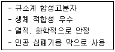
- PVC
- SILICONE
- PVA
- PE
(정답률: 66%)
96. 단면적이 0.01 m2인 어떤 재료의 인장시험에서 인장력이 100N일 때, 이 재료의 단면에 발생하는 응력은?
- 1 MPa
- 0.1 MPa
- 0.01 MPa
- 0.001 MPa
(정답률: 47%)
97. 다음 중 생체 비활성 소재인 것은?
- 석고
- 알루미나
- 바이오글라스
- 저밀도 수산화인회석
(정답률: 63%)
98. 생체의 광학적 특성에 대한 설명으로 틀린 것은?
- 광전식 용적맥파계(photo plethysmography, PPG)는 자외선을 이용하여 혈량을 측정한다.
- 빛이 생체조직에 입사되면 흡수나 산란이 일어나게 되고, 빛 에너지의 일부는 열적에너지로 변환되어 생체조직의 온도를 증가시키게 된다.
- 광 역동적 치료(photodynamic therapy, PDT)를 이용한 암치료는 광과민성 약물과 레이저로 정상세포에 영향을 주지 않고, 암세포만을 선택적으로 파괴시킨다.
- 레이저를 이용한 온열치료(laser-induced thermotjerapy, LITT)는 약 43℃를 경계로 암세포의 생존율이 급격히 저하되는 원리를 이용한다.
(정답률: 50%)
99. 어떤 재료가 변형률 0.01까지 탄성변형을 하며, 변형률 0.01에서의 응력이 10 Pa이었다면 이 재료의 탄성계수(Pa)는 얼마인가?
- 0.1
- 10
- 100
- 1000
(정답률: 61%)
100. 피치가 10mm인 2줄 나사의 리드는?
- 10mm
- 20mm
- 30mm
- 40mm
(정답률: 77%)